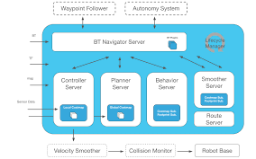
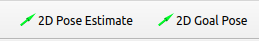
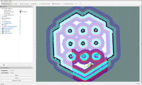
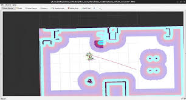

Localization & Navigation
Overview
Localization and navigation allow Titan Robot to estimate its position within a known map and autonomously move to target locations.
This section explains how localization and navigation are performed using ROS 2 Navigation (Nav2).

Titan Robot relies entirely on Nav2 for: - Localization using a pre-built map - Global and local path planning - Obstacle avoidance - Velocity command generation

Localization Concepts
What is Localization?
Localization is the process of estimating the robot’s pose (x, y, θ) within a known map.
Once a map is provided, the robot continuously estimates its position using sensor data and odometry.
Nav2 uses a probabilistic localization approach (AMCL) to localize the robot on the map.
Inputs Used for Localization
| Input | Source |
|---|---|
| Map | Pre-built occupancy grid |
| Laser scans | 2D LIDAR (/scan) |
| Odometry | Encoder-based odometry (/odom) |
| TF | Coordinate frame transforms |
Prerequisites
Before starting localization and navigation, ensure that:
- A valid map file (.yaml and .pgm) is available
- Robot bringup is running
- LIDAR is publishing scan data
- Odometry is being published correctly
Launching Localization and Navigation
Localization and navigation are launched together using Nav2 bringup.
Run the following command:
ros2 launch nav2_bringup bringup.launch.py map:=/absolute/path/to/map.yaml
This launch file starts: - Map server - Localization (AMCL) - Global planner - Local controller - Costmaps - Behavior tree navigator
Initial Pose Estimation

After Nav2 starts, the robot must be given an initial pose.
In RViz2:
- Set Fixed Frame to
map - Select the 2D Pose Estimate tool
- Click on the robot’s approximate position on the map
- Set the robot’s orientation
The localization system will converge to the correct pose within a few seconds.
Verifying Localization
Localization is working correctly if:
- The robot model aligns with the map
- Laser scans match map walls
- Small movements update the pose smoothly
- The pose does not jump unexpectedly
Navigation Overview
Navigation allows the robot to autonomously move to a target pose while avoiding obstacles.
Nav2 handles: - Global path planning - Local obstacle avoidance - Velocity command generation
Velocity commands are published to the /cmd_vel topic and sent to the ESP32.
Sending Navigation Goals
To send a navigation goal:
- Open RViz2
- Set Fixed Frame to
map - Select 2D Goal Pose
- Click on the desired target location
- Set the target orientation
Nav2 will compute a path and drive the robot to the goal.
Costmaps

Global Costmap
- Based on the static map
- Used for long-range path planning
- Represents static obstacles
Local Costmap
- Built from real-time sensor data
- Used for obstacle avoidance
- Updates continuously during navigation
Navigation Behavior

During navigation, the robot:
- Plans a path to the goal
- Continuously updates the path
- Avoids static and dynamic obstacles
- Stops when the goal is reached
Common Localization Issues
| Issue | Possible Cause | Solution |
|---|---|---|
| Robot pose jumps | Incorrect initial pose | Reset pose using RViz |
| Slow convergence | Odometry drift | Improve encoder calibration |
| Laser mismatch | Incorrect TF frames | Verify LIDAR transforms |
Common Navigation Issues
| Issue | Possible Cause | Solution |
|---|---|---|
| Robot does not move | No velocity commands | Check Nav2 nodes and /cmd_vel |
| Oscillations | Aggressive controller tuning | Tune controller parameters |
| Collisions | Incorrect costmap setup | Adjust footprint and inflation |
| No path generated | Localization failure | Verify map and pose accuracy |
Safety Guidelines
- Test navigation in open environments
- Limit maximum speed during initial testing
- Always monitor the robot during autonomous runs
- Keep an emergency stop accessible
Performance Tuning Tips
- Ensure odometry is accurate before tuning Nav2
- Verify TF tree correctness
- Reduce costmap resolution if CPU usage is high
- Avoid running heavy perception nodes simultaneously
Your robot is now fully capable of localization and autonomous navigation using Nav2 🚀